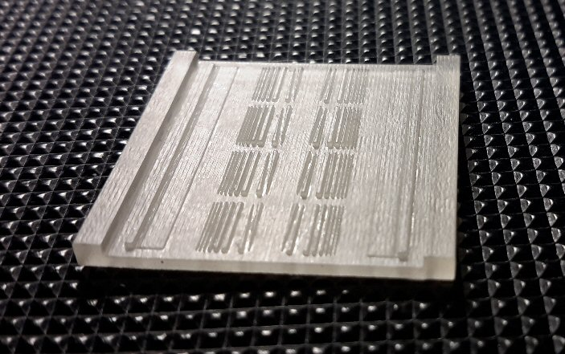
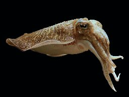
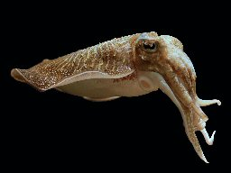

Engineering Design Services Supporting Scientific Research in Woods Hole and Beyond
Imaging, Instrumentation and Informatics
- software design and development: architectures, interface
and systems design
- bioimage informatics: ImageJ/FIJI
programming and customization, metadata management
- imaging and optical systems, biological microscopy systems
customization/adaptation
- hardware interfacing: instrument control with
Micromanager,
imaging sensors, motion control

Bioimage Informatics: ImageJ/FIJI, ImgLib, Microscopy: OpenPolScope,SPIM, Lightfield, ...
Mizar... Biological Microscopy, particularly using Polarized Light Microscopy Techniques
Mechanical Design and Fabrication
- systems design and development including hardware and software
- engineering analysis and research
- modeling, CAD design, 3D printing,
- machining and
fabrication of mechanical/optical components
- troubleshooting and repairs
Recent Projects:
|
Polarized Light Field Microscopy using Deep Learning
|

|
Custom Microscope adapters for
 at MBL.
at MBL.
|
 
|
Fluorescence Polarization on DiSPIM Microscope
|

|
Agar Casting Molds for embryo manipulation |
  
|
Design of Embryo Incubator and other apparatus for
Cephalopod Operations at the Marine Biological Laboratory.
|
Grant B. Harris, Consulting Engineer
Contact: GBH@Explorative.Engineering 508-524-1709
 We also offer Marine Services
We also offer Marine Services
Links to Science in Woods Hole:
Marine Biological Laboratory
Woods Hole Oceanographic Institute
US Geologic Survey
Woods Hole Research Center
NOAA Fisheries
SEA: Sea Education Association
Children's Schools of Science
Explorative.Engineering Woods Hole, MA 02543